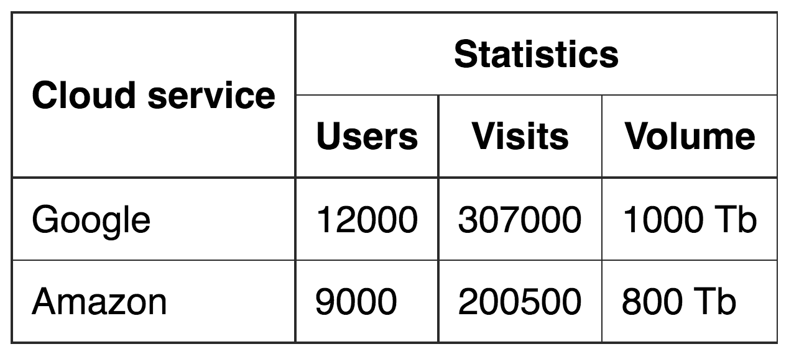

Таблицы
Таблицы позволяют отобразить сложные связи, размещая в ячейках любой контент. Использовать их нужно только для разметки табличных данных: расписание транспорта, календарь, результаты матчей, финансовые операции, меню в ресторане, прайслист и т. п. То есть информацию, которую логично представить в табличном виде, например используя Google Sheets.
ПОЛЕЗНО
Элементы таблицы семантически описывают табличные данные, и использование их для других целей это нарушение семантики.
Будем набирать разметку вот такого расписания поездов.

Таблица это набор строк с ячейками. Познакомимся с базовыми тегами.
- <table> - определяет всю таблицу, контейнер для контента.
- <tr> - строка таблицы (table row). Не может быть пустой, должна содержать хотя бы одну ячейку.
- <td> - ячейка таблицы (table data). Можно использовать только внутри строки. В каждой строке таблицы должно быть одинаковое количество ячеек.
Разметим расписание поездов таблицей с тремя строками.
ПОЛЕЗНО
По умолчанию у таблицы нет особого оформления, например такой тёмной рамки как на изображении. Для этого используется CSS, как и для любого другого оформления контента.
Ячейки-заголовки
Для того, чтобы создать строку с заголовками столбцов, используем стандартный тег <tr> для строки, а ячейки размечаем специальным тегом <th> (table header) - семантическим тегом ячейки-заголовка. По умолчанию текст внутри <th> выделяется жирным и центрируется.
Секции таблицы
Для повышения семантики разметки таблицы есть несколько структурных тегов.
- <thead> - шапка, оборачивает группу строк таблицы в области заголовка.
- <tbody> - тело, оборачивает основную группу строк таблицы.
- <tfoot> - подвал, обозначает группу строк таблицы в области нижнего колонтитула.
В расписании поездов можно выделить шапку из одной строки с названиями колонок и тело.
Заголовок таблицы
Если у таблицы есть заголовок, конечно можно разметить его используя теги заголовков.
Но более семантично будет использовать специальный табличный тег <caption> , который должен располагаться внутри таблицы, самым первым элементом.
Вот пример результата.
Можно посмотреть CSS стили, где к каждому из CSS-правил есть комментарий с пояснением.
Группировка ячеек
Некоторые таблицы сделаны так, что нужно объединить несколько ячеек по горизонтали или вертикали.
Напишем разметку такой таблицы добавив дополнительные ячейки, учитывая что «Облачный сервис» займёт две ячейки по вертикали, а «Использование» - три по горизонтали.
Обратите внимание на пустые теги <th>, в каждой строке должно быть одинаковое количество ячеек, поэтому «лишние» пока что оставлям пустыми. В результате получим такую таблицу.
| Cloud service | Statistics | ||
|---|---|---|---|
| Users | Visits | Volume | |
| 12000 | 307000 | 1000 Tb | |
| Amazon | 9000 | 200500 | 800 Tb |
Правило равенства числа ячеек в строках и столбцах нельзя отменить, но можно обойти. Для того чтобы расширить ячейку по горизонтали используется атрибут colspan, по вертикали - rowspan.
Нужно определить группу ячеек для слияния и затем самой верхней и левой ячейке группы задать атрибут colspan с числом ячеек требующих объединения справа и/или rowspan снизу. После этого обязательно нужно удалить ставшие ненужными ячейки справа и/или снизу.
В нашей задаче ячейка «Облачный сервис» должна занимать 2 ячейки по вертикали, поэтому добавляем ей rowspan="2" и удаляем пустой <th> на строке ниже. Аналогично с ячейкой «Использование», устанавливаем colspan="3" и удаляем две соседние ячейки справа в этой строке.
ИНТЕРЕСНО
Правило равенства числа ячеек будет визуально нарушено, но браузер учитывает ячейки в объединённых группах, поэтому всё правильно.